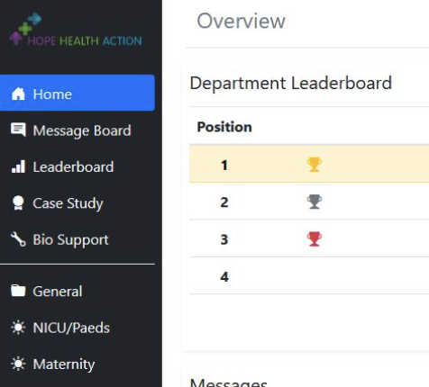
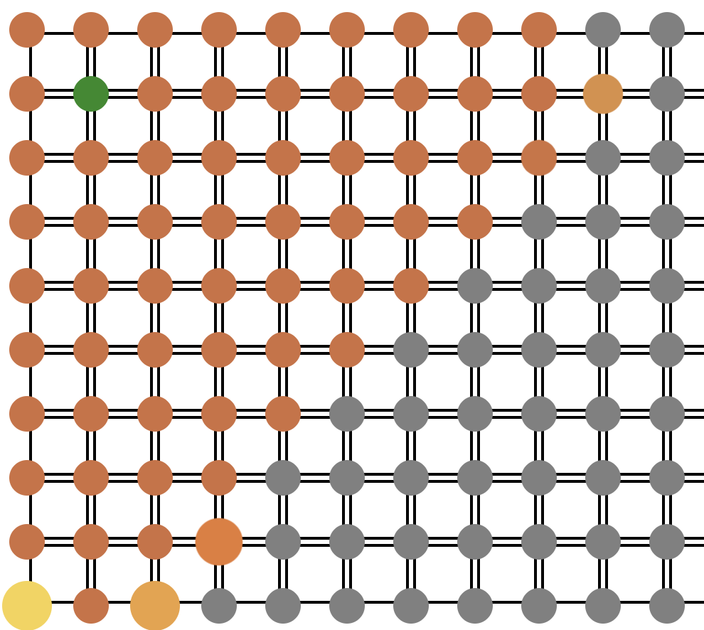

<section>
  <div id="container" class="grid-container">
    <h1 class="header1">Software</h1>
    <div class="item1">
      
      <div>
        <h3>
          Hope Health Action | Web Application for a Non-profit to Manage
          Monthly Hospital Data
        </h3>
        <ul>
          <li>
            Contributed to the development of a web application used by a
            non-profit hospital in Haiti to improve healthcare
          </li>
          <li>
            Repaired and extended existing API tests using Mocha and Chai,
            ensuring correct functionality by validating endpoints' expected
            outcomes
          </li>
          <li>
            Implemented front-end tests with Cypress, evaluating diverse client
            features programmatically, including navigation, French translation,
            and the creation/deletion of case studies and other data types
          </li>
          <li>
            Ensured that user-specific access rights were enforced to improve
            application security
          </li>
        </ul>
        <p class="technologies">
          ReactJS &#x2022; Redux &#x2022; Node.js &#x2022; Express &#x2022;
          Mongoose &#x2022; Mocha &#x2022; Chai &#x2022; Cypress
        </p>
      </div>
    </div>
    <div class="item2">
      
      <div>
        <h3>
          <a href="https://github.com/Superocker50/Pathfinder-Visualizer"
            >Pathfinder Visualizer | Dijkstra's Algorithm</a
          >
        </h3>
        <ul>
          <li>
            Developed a visualization of Dijkstra’s shortest-path algorithm
            between two nodes
          </li>
          <li>
            Implemented a “restart animation” feature and allowed user to change
            “start” and “end” node positions
          </li>
          <li>
            <a href="https://superocker50.github.io/Pathfinder-Visualizer/">
              Try It Here!
            </a>
          </li>
        </ul>
        <p class="technologies">ReactJS &#x2022; HTML/CSS</p>
      </div>
    </div>
    <h1 class="header2">Data Science & Analytics</h1>
    <div class="item3">
      
      <div>
        <h3>
          <a href="https://github.com/Superocker50/CMPT-353-Final-Project">
            Exploratory Data Analysis | A Comparison Between the Google Play
            Store and Apple App Store
          </a>
        </h3>
        <ul>
          <li>
            Facilitated the analysis of data-driven inquiries by cleaning data
            with Pandas and Numpy
          </li>
          <li>
            Presented results by creating various data visualisations using
            Matplotlib, Seaborn and Plotly
          </li>
          <li>
            Analysed and interpreted findings by conducting several statistical
            tests with SciPy and statsmodels
          </li>
          <li>
            Implemented a python program to scrape over one million app reviews
            from the Google Play Store with the Python google-app-scraper
            library
          </li>
        </ul>
        <p class="technologies">
          Pandas &#x2022; NumPy &#x2022; SciPy &#x2022; Statsmodels &#x2022;
          Matplotlib &#x2022; Seaborn &#x2022; Plotly
        </p>
      </div>
    </div>
    <div class="item4">
      
      <div>
        <h3>
          <a href="https://github.com/Superocker50/Vehicular-Collision-Analysis"
            >Exploratory Data Analysis | Vancouver Vehicular Collisions</a
          >
        </h3>
        <ul>
          <li>
            Performed time series analyses on the location and frequency of
            vehicular collisions occurring at intersections with and without
            traffic cameras in Vancouver
          </li>
          <li>
            Visualized collisions clusters by creating an interactive map with
            Folium using data cleaned with Pandas and Numpy
          </li>
          <li>
            Created interactive plots in Jupyter Notebook with ipyWidgets to
            view monthly and yearly trends
          </li>
        </ul>
        <p class="technologies">
          Pandas &#x2022; NumPy &#x2022; SciPy &#x2022; Matplotlib &#x2022;
          Seaborn &#x2022; ipyWidgets &#x2022; Folium
        </p>
      </div>
    </div>
  </div>
</section>
